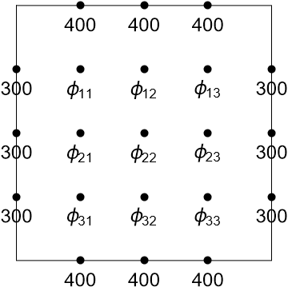
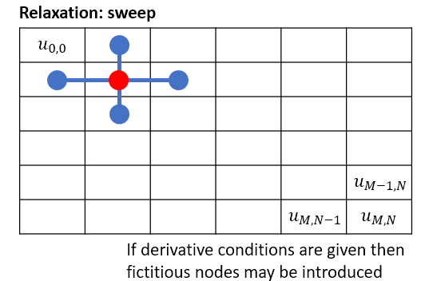

Multivariate example
Contents
9. Multivariate example#
This section provides an example application of the central differences formulae to solve a boundary value problem in variables \(x\) and \(y\). We will look at the Laplace equation, which is an important and widely studied problem that represents the steady-state of the heat equation.
We will tackle the problem using an iterative approach, as this approach is simplest and it tends to be both simple and (reasonably) efficient. However, we will also discuss the approach that solves the system simultaneously.
9.1. Laplace equation#
The steady-state version of the two-dimensional heat equation is given by
Applying the second derivative central difference formula at the interior points gives
and so we obtain
9.2. Simultaneous equations#
Consider a rectangular plate, with temperature \(u(x,y)\) described by the steady heat equation \(\nabla^2 u = 0\). The plate is maintained at boundary temperatures \(u = 300, 400\) on pairs of opposite edges as shown. We will solve this problem using a central finite difference scheme on a (3 × 3) grid of interior points.

{kind=link}
There is one equation for each node (equation variable), which we may write in matrix form as follows :
In this example, the values given on the boundary nodes were incorporated on the RHS of the matrix equation. Alternatively, we could solve simultaneously on all 21 illustrated nodes including the boundary nodes in a similar manner to how we did it in Section 7.3, Equation (7.9).
Either way, you may notice that as a consequence of reshaping the array of node values into a column it becomes difficult to keep track of the nodes that are neighbours. This makes the an approach based on simultaneous equations more challenging for multivariable problems.
Additionally (as has been noted) the problem involves a sparse matrix since the finite difference method only relates each node to its nearest neighbours. Inverting the sparse coefficient matrices can be computationally impractical for problems with many nodes.
Therefore, we will not bother with coding the solution to this problem, and we will instead develop the iterative approach that we saw in the previous chapter.
9.3. Iterative approach#
Instead of starting with the toy problem given above, we will illustrate for the case where:
subject to the conditions
We will compare the solution to the analytic result, which is given by
As before, we begin by creating an mesh, this time in two dimensions \((x,y)\) by using meshgrid. We need to obtain \(f(x,y)\) at each point on the mesh.
import numpy as np
import matplotlib.pyplot as plt
from mpl_toolkits.mplot3d import Axes3D
# This is the RHS of the equation
f = lambda x,y: (2-np.pi**2*(1+x)**2)*np.cos(np.pi*y)
# set up the grid
n=30;
x = np.linspace(0,1,n)
y = np.linspace(0,1,n);
# Useful to store f(x,y) in an array and use F(i,j) instead of f(x(i),y(k))
X,Y = np.meshgrid(x,y)
F=f(X,Y);
# determine grid size
h =x[1]-x[0]
We then initialise the solution matrix at each point on the grid and enforce the boundary conditions:
# to hold the solutions
U = np.zeros((n,n));
# enforce boundary conditions
U[0,:] = (1+x)**2
U[-1,:]=-(1+x)**2
U[:,0] = np.cos(np.pi*y)
U[:,-1]=4*np.cos(np.pi*y)
The final step is to apply the iterative formula, sweeping sequentially through the grid from top-left to bottom right. Here, we use \(r=1\), which corresponds to the Gauss-Seidel algorithm, but you could try some higher values for relaxation.

{kind=link}
In this implementation, we update only the interior points during the sweep, so the boundary conditions do not need to be re-enforced after each sweep.
r=1;
n,m = np.shape(U)
nsweep=300 #number of sweeps
for k in range(nsweep-1):
for i in range(1,n-1):
for j in range(1,m-1):
Unew = (U[i-1,j]+U[i+1,j]+U[i,j-1]+U[i,j+1])/4-h**2/4*F[i,j]
U[i,j] = U[i,j]+r*(Unew-U[i,j])
Finally, we compare the results to the analytic solution
# compare to analytic results
T = (1+X)**2*np.cos(np.pi*Y)
fig = plt.figure(figsize=(16, 8))
ax1 = fig.add_subplot(121,projection='3d')
ax1.plot_surface(X,Y,T)
ax1.set_title('Exact')
ax2 = fig.add_subplot(122,projection='3d')
ax2.plot_surface(X,Y,np.abs(U-T))
ax2.set_title('Gauss-Seidel error')
plt.show()
9.4. Chapter exercise#
Solve the problem using an iterative solution technique, for the case where:
subject to the conditions
Hint: to enforce the Neumann boundary conditions, you will need to construct the solution at nodes outside the boundary and remove these ``fictitious’’ nodes from your solution at the end.
Neumann conditions:
Besides changing the definition of the function \(f\), we only need to modify the construction of \(U\) to include the fictitious nodes. First we initialise the grids including fictitious nodes:
# the solution grid is padded with fictitious nodes to remove at the end
U = np.zeros((n+2,n+2))
# we need to pad F as well, so that the two grids are not mismatched
F=np.pad(F,1, mode='constant')
Then, when we perform the update steps we ensure that the boundary conditions are enforced on the fictitious nodes